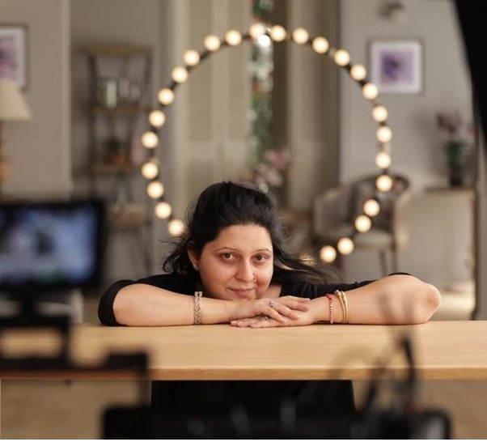
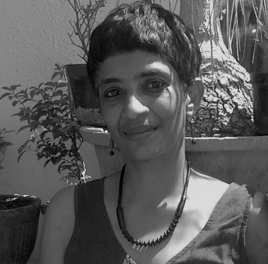

Aaquib Wani
Designer & Art Director
Aaquib Wani, Forbes 30 under 30 for Design ’21, is a self-taught experiential designer & art director with creative expertise in spaces, sets, interactive installations, weddings, visual and graphic design, blending the aesthetic palettes absorbed through his Kashmiri heritage and upbringing in New Delhi. From working as the art director for a music magazine to learning the boundaries of space design under renowned spatial designer Sumant Jayakrishnan, he has mastered the art of not just 2D but also 3D design.

Apurva Joshi
Founder-Private Matters
An MBA by education she started her career in the male-dominated field of FMCG sales where she was the only girl in a male dominated field and that was her first brush with the prejudices and challenges women face in corporate India. She Founded Private Matters, a Digital Education initiative focussing on Empowering women through information on female health and wellness, mental health & body positivity. Her content catches the essence of the various subjects that concern women, tossing every bias that veils their potential. She projects the often tabooed topics with candour and humour, creating waves of introspection.

Kopal Naithani
Ad-Film Director
Kopal Naithani is a prolific ad-film director who runs her own production house Superfly Films which she launched in 2016. She has worked with various renowned brand names such as Axis Bank, Byju, HUL, Flipkart, and many others. Her vision is to deliver high-caliber films that focus on narratives and performances with top-notch production quality. Starting from being an AD to now a full-time director, Kopal always tries to give a different experience to the audience through her ad films.

RJ Kabir
Radio Jockey
RJ Kabir hosts the Morning show on 93.5 Red FM called Morning NO.1 and proudly hosts India’s Only LGBTQ+ Radio Show called Rainbow Diaries. He has consecutively won the Best RJ OF THE COUNTRY award twice and also a NEW YORK AWARD for various campaigns. He is gifted with creating a living room environment on the show, providing each and every listener with the comfort and ease to open up and voice their opinion without hesitation.

Suprabha Seshan
Environmentalist
Suprabha has loved the natural world since she was very young. Her family encouraged her to pursue the wild. She was fortunate to have an education through school and undergraduate levels at schools and centres founded by J. Krishnamurti, in India and the UK. Her degree in Earth Studies with the British Open University was completed while she was a student at Brockwood Park Educational Centre, where she explored how gardening could support species and wildlife. The forest garden at GBS conserves over 2000 species of native Western Ghat plants. On behalf of this work, Suprabha received the prestigious Whitley Award in 2006. She is also an Ashoka Fellow. She has been at GBS since 1993. She is the Managing Trustee of Munnarakunnu Trust which stewards GBS and other conservation initiatives